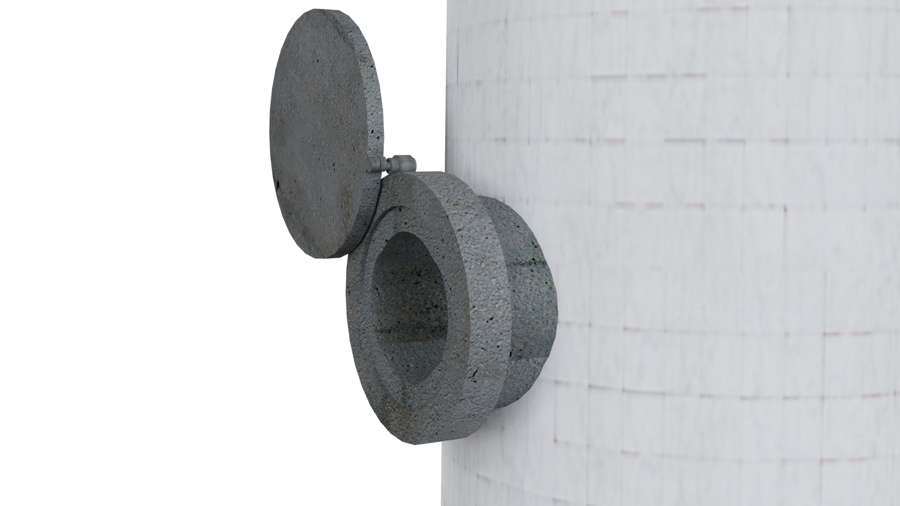
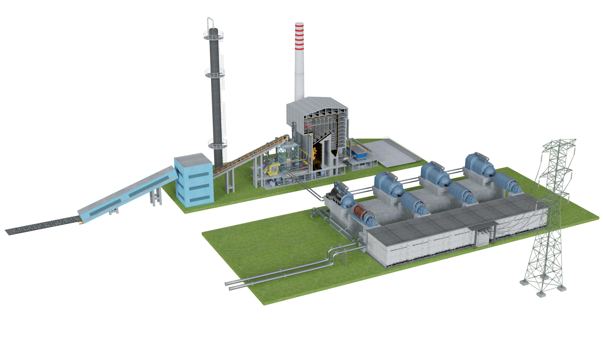

Wybrane przyrządy pomiarowe i ich funkcje

Dokonaj pomiaru gazów pochodzących z emisji spalin, wyniki odczytaj z wyświetlacza urządzenia pomiarowego i wpisz je w odpowiednie miejsca. Następnie sprawdź, czy otrzymane wartości są zgodne z wymaganiami określonymi w normie nr PN-EN 50379 i odpowiedz na zadane pytanie.
Czy wykryta wartość każdego z gazów mieści się w zakresie pomiarowym zgodnym z wytycznymi?
Brawo, to jest poprawna odpowiedź.
Niestety, to nie jest poprawna odpowiedź. Wróć do polecenia i zapoznaj się
z zakresem pomiarowym dla wybranych parametrów. Przedstawia go tabela zawierająca
wymagania Polskiej Normy PN-EN 50379.

Gaz
Wykryta wartość
O2
%
CO
ppm
NO
ppm
NOx
ppm
Dokonaj pomiaru zapylenia spalin, wyniki odczytaj z wyświetlacza pyłomierza i wpisz je w odpowiednie miejsca. Następnie sprawdź, czy otrzymane wartości są zgodne z wymaganiami określonymi w Dz.U. z 2019 r. poz. 1931 i odpowiedz na zadane pytanie.
Czy wykryte wartości pyłów zawieszonych PM2.5 i PM10 mieszczą się w zakresie pomiarowym zgodnym z rozporządzeniem?
Brawo, to jest poprawna odpowiedź.
Niestety, to nie jest poprawna odpowiedź. Wróć do polecenia i zapoznaj się z zakresem pomiarowym
dla wybranych parametrów. Przedstawia go tabela zawierająca wymagania rozporządzenia
Ministra Środowiska z dnia 8 października 2019 r.
Substancja
Wykryta wartość [µg/m3]
PM2.5
PM10
Dokonaj pomiaru poziomu hałasu, wynik odczytaj z wyświetlacza miernika. Sprawdź, czy otrzymana
wartość jest zgodna z wytycznymi określonymi w rozporządzeniu Ministra Gospodarki i Pracy
w sprawie bezpieczeństwa i higieny pracy podczas prac związanych z narażeniem na hałas lub
drgania mechaniczne (Dz.U. z 2005 r. Nr 157, poz. 1318) oraz w normie PN-ISO 9612:2009, a następnie
odpowiedz na zadane pytanie.
Zgodnie z normą urządzenia zainstalowane w pomieszczeniu kotłowni mogą emitować w odległości 1 m od
urządzenia dopuszczalny poziom dźwięku (LAmax = 85 dB).
Czy wykryte wartości hałasu mieszczą się w zakresie pomiarowym zgodnym z wytycznymi?
Brawo, to jest poprawna odpowiedź.
Niestety, to nie jest poprawna odpowiedź. Wróć do polecenia i zapoznaj
się z wytycznymi przedstawiającymi próg pomiarowy. Następnie przeanalizuj pomiar jeszcze raz.
Zapoznaj się z poniższą informacją, a następnie odpowiedz na pytanie.
„W przypadku przekroczenia wartości 80,0 dB może dojść do uszczerbku na zdrowiu, jeśli ekspozycja na hałas jest długotrwała. Wówczas pracodawca jest zobowiązany zaplanować i podjąć działania zmniejszające ryzyko zawodowe”.
Czy pracodawca powinien udostępnić środki indywidualnej ochrony słuchu pracownikom, którzy przebywają w kotłowni?
Brawo, to jest poprawna odpowiedź.
Niestety, to nie jest poprawna odpowiedź. Wróć do polecenia i zapoznaj
się z wytycznymi przedstawiającymi próg pomiarowy hałasu oraz wynikiem
pomiaru. Następnie odpowiedz na pytanie jeszcze raz.
Aby kocioł pracował bezpiecznie i poprawnie, niezbędne jest
utrzymanie właściwych parametrów wody. Uzdatniona woda ma wpływ na stan
wytwornicy pary, a woda zasilająca musi być stale poddawana analizie
potwierdzającej jej jakość.
Wykonaj pomiar wody zasilającej, a następnie sprawdź, czy otrzymane wartości
mieszczą się w przedstawionych poniżej zakresach.
Czy otrzymane parametry mieszczą się w zakresie pomiarowym zgodnym z wytycznymi?
Brawo, to jest poprawna odpowiedź.
Niestety, to nie jest poprawna odpowiedź. Wróć do polecenia i zapoznaj
się z wytycznymi przedstawionymi w tabeli. Następnie wykonaj
i przeanalizuj pomiar jeszcze raz.
Dokonaj pomiaru zawartości SiO2 w parze świeżej. Monitorowanie krzemionki w parze jest istotne, gdyż para przemieszczając się przez turbinę, wchodzi w kontakt z jej elementami mechanicznymi. Skutkiem może być odkładająca się krzemionka na łopatkach turbiny, a efektem konieczność naprawy lub wymiany łopatek. Zawartości SiO2 w parze nie powinna przekraczać 5 ppb.
Czy wykryta wartość zawartości tlenku krzemu(IV) mieści się w zakresie pomiarowym zgodnym z wytycznymi?
Brawo, to jest poprawna odpowiedź.
Niestety, to nie jest poprawna odpowiedź. Wróć do polecenia i zapoznaj się
z wytycznymi przedstawiającymi próg pomiarowy. Następnie przeanalizuj
pomiar jeszcze raz.

Dobranie odpowiednich metod uzdatniania wody oraz jej kondycjonowania przyczynia się do długotrwałej pracy kotłów parowych. Przewodność kondensatu powinna być mniejsza od 30 μS/cm, lecz wartość ta może być podwyższona przez związki wspomagające uzdatnianie. Dokonaj pomiaru przewodności właściwej skroplin kondensatu, a następnie sprawdź, czy wartość ta mieści się w wymaganym zakresie pomiarowym.
Czy zmierzona wartość przewodności kondensatu mieści się w zakresie pomiarowym zgodnym z wytycznymi?
Brawo, to jest poprawna odpowiedź.
Niestety, to nie jest poprawna odpowiedź. Wróć do polecenia
i zapoznaj się z wytycznymi przedstawiającymi próg pomiarowy,
a następnie przeanalizuj pomiar jeszcze raz.
Dokonaj pomiaru poziomu oraz temperatury wody zrzutowej, wyniki odczytaj z wyświetlacza przepływomierza i wpisz je w odpowiednie miejsca. Czy temperatura wody zrzutowej osiągnęła maksymalną wartość dopuszczalną, tj. 35°C?
Czy zmierzona wartość temperatury wody zrzutowej osiągnęła maksymalną wartość dopuszczalną?
Brawo, to jest poprawna odpowiedź.
Niestety, to nie jest poprawna odpowiedź. Wróć do polecenia
i zapoznaj się z wytycznymi przedstawiającymi maksymalną
wartość dopuszczalną temperatury wody zrzutowej, a następnie
przeanalizuj pomiar jeszcze raz.

Dokonaj pomiaru poziomu oraz temperatury wody zrzutowej, wyniki odczytaj z wyświetlacza przepływomierza i wpisz je w odpowiednie miejsca. Czy temperatura wody zrzutowej osiągnęła maksymalną wartość dopuszczalną, tj. 35°C?
Czy zmierzona wartość zawartości substancji ropopochodnych jest niższa niż wartość dopuszczalna?
Brawo, to jest poprawna odpowiedź.
Niestety, to nie jest poprawna odpowiedź. Wróć do polecenia
i zapoznaj się z wytycznymi przedstawiającymi maksymalną
dopuszczalną wartość zawartości substancji ropopochodnych,
a następnie przeanalizuj pomiar jeszcze raz.
Dokonaj pomiaru poziomu drgań generatora napędzanego turbiną osiągającą moc 165 kW. Wyniki odczytaj z wyświetlacza miernika drgań, a następnie, po zapoznaniu się z granicznymi dopuszczalnymi poziomami wibracji wg normy PN-EN-ISO 10816, odpowiedz na pytanie.
Czy zmierzona wartość drgań generatora znajduje się w stanie dopuszczalnym?
Brawo, to jest poprawna odpowiedź.
Niestety, to nie jest poprawna odpowiedź. Wróć do polecenia
i zapoznaj się z wytycznymi przedstawiającymi maksymalną dopuszczalną
wartość temperatury wody zrzutowej, a następnie przeanalizuj pomiar
jeszcze raz.

Budowa elektrociepłowni i elektrowni parowo-gazowej
